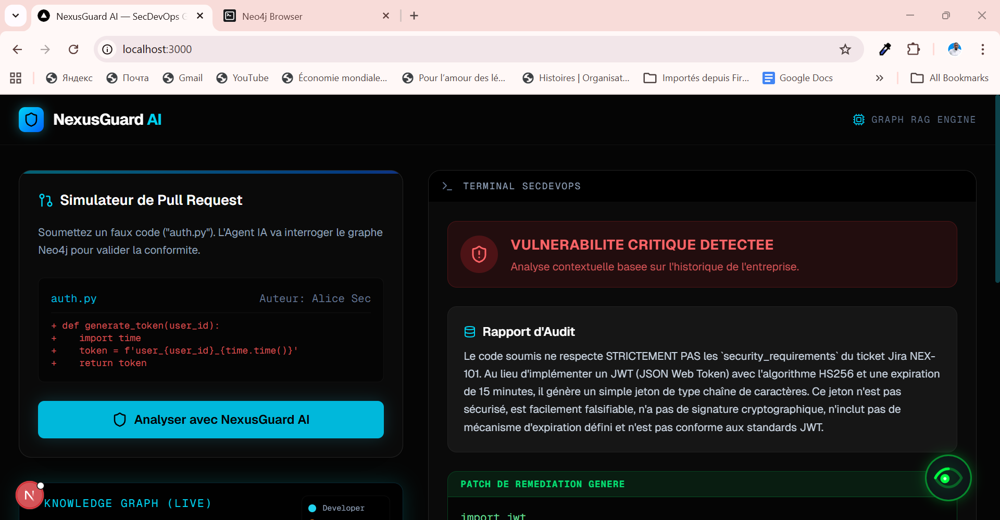
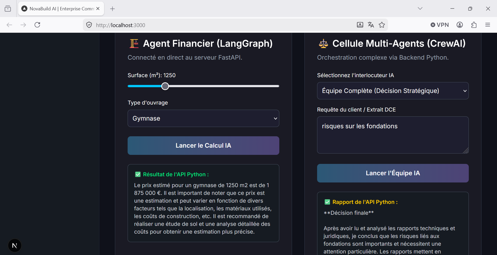
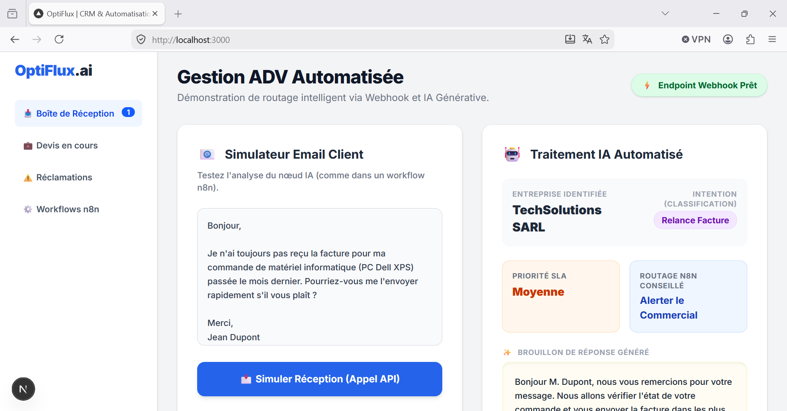
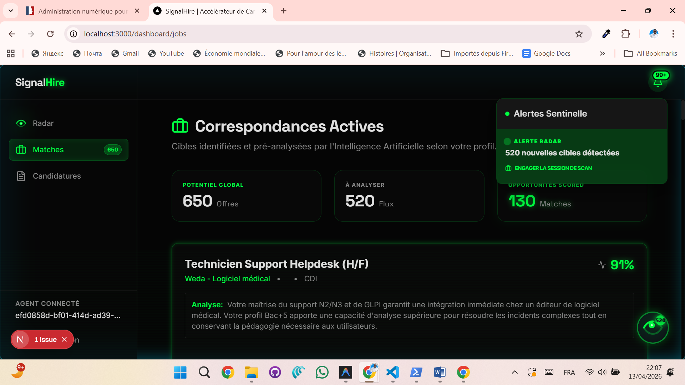
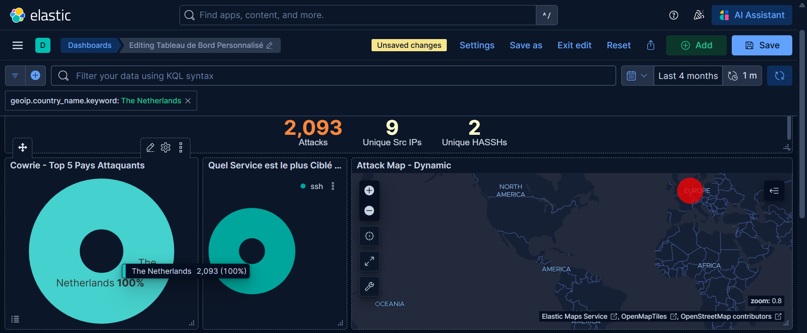
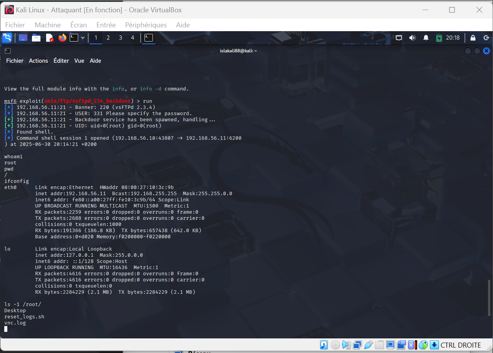

Voici une sélection de mes travaux les plus aboutis, démontrant ma capacité à concevoir des outils métier (SaaS), à gérer des infrastructures Cloud et à automatiser des tâches complexes.
SecDevOps
Graph RAG
Neo4j
Gemini AI
Knowledge Graph
Projet Phare : NexusGuard AI — Agent SecDevOps Autonome par Graphe de Connaissances
Développement d'un agent de sécurité intelligent qui comprend le contexte métier d'une équipe de développement. Contrairement aux outils classiques (SonarQube, Snyk) qui scannent le code avec des règles statiques, NexusGuard AI interroge un Knowledge Graph (Neo4j) pour retrouver les tickets Jira, les politiques de conformité et l'historique des développeurs avant de générer son verdict.

Architecture Graph RAG
- Knowledge Graph (Neo4j) : 26 nœuds (Développeurs, Tickets, Fichiers, Vulnérabilités, Politiques) et 34 relations modélisant l'écosystème socio-technique.
- Moteur Graph RAG Custom : Traduction automatique de questions en requêtes Cypher via Gemini, sans LangChain (architecture légère et maîtrisée).
Agent SecDevOps Autonome
- Analyse Contextuelle : L'IA parcourt le graphe pour retrouver les exigences de sécurité du ticket Jira associé au code soumis.
- Auto-Remédiation : Génération automatique de patchs de code corrigés (ex: JWT HS256 + expiration 15min) en cas de non-conformité.
- Stack : Python, FastAPI, Neo4j (Docker), Gemini 2.5 Flash, Next.js, TailwindCSS.
Compétences Mobilisées :
Knowledge Graph (Neo4j)
Graph RAG
Gemini AI
SecDevOps
FastAPI
Cypher Query Language
Next.js
Docker
Agentic AI
LangGraph
CrewAI
BTP / Enterprise
AI Safety
Projet 1 : NovaBuild AI — Système d'Orchestration Multi-Agents
Développement d'un système intelligent "Enterprise-Ready" démontrant des capacités de raisonnement avancé pour le secteur de la construction. Ce projet utilise une architecture multi-agents complexe pour analyser, chiffrer et débattre des choix techniques, éliminant ainsi les hallucinations des LLMs classiques.

Architecture Multi-Agents
- LangGraph : Routage dynamique de l'information et exécution d'outils (Calculator Tool, VectorDB Tool).
- CrewAI : Débat contradictoire entre un Agent Ingénieur et un Agent Commercial pour garantir la fiabilité du devis.
Robustesse & Intégration
- Prévention des Hallucinations : Forçage de l'utilisation d'outils externes pour les calculs mathématiques et la recherche de prix (RAG).
- Sécurité "By Design" : Prévention des Injections de Prompt (Data Poisoning) et architecture Human-in-the-Loop (HITL).
- Stack Moderne : Python, FastAPI (Backend) et Next.js (Frontend).
Compétences Mobilisées :
LangGraph
CrewAI
Llama-3 / Groq
Agentic Workflows
RAG
FastAPI
Prompt Injection Defense
Automatisation n8n
IA Générative
FastAPI
SecDevOps
Projet 2 : OptiFlux CRM — Automatisation ADV & Routage Intelligent
Preuve de concept (PoC) d'une automatisation d'Administration des Ventes (ADV). Ce projet simule un webhook n8n capable d'intercepter des requêtes clients entrantes et de les traiter de manière autonome via l'IA avant insertion dans le CRM.

Pipeline d'Automatisation
- Simulation Webhook n8n : Point d'entrée FastAPI écoutant les flux de données entrants.
- Structured Output (Pydantic) : Forçage du modèle IA à renvoyer un JSON strict pour l'intégration CRM.
- AI Safety & SecDevOps : Couche de sanitarisation contre le Data Poisoning et Rate Limiting (anti-DDoS).
Traitement Intelligent
- Classification Llama-3 : Identification du client, de l'intention et de l'urgence de la requête.
- Génération de Brouillon : Rédaction automatique de la réponse et attribution du bon routage (ex: Service Réclamations).
Compétences Mobilisées :
n8n Automation
Structured Data (Pydantic)
Python (FastAPI)
Llama-3
Next.js
SecDevOps
Intelligence Artificielle
Outil Métier SaaS
Automatisation
Infra Sécurisée
Projet 3 : SignalHire — Assistant de Sourcing & Automatisation des Processus
Développement de A à Z d'une plateforme SaaS autonome. Cet outil illustre ma capacité à identifier un problème de productivité chronophage et à concevoir une solution technique robuste pour l'automatiser de bout en bout grâce à l'Agentic AI.

Piliers Technologiques
- Radar Sourcing : Agrégation d'offres en temps réel via APIs (LinkedIn, France Travail, Google Jobs, Welcome to the Jungle, Adzuna).
- Scoring Prédictif : Analyse sémantique de compatibilité entre offres et CV Maitre via Gemini et Groq.
- Automatisation LaTeX : Génération dynamique de CV et lettre de motivation qui matchent avec l'offre et optimisés pour les ATS.
Architecture & Robustesse
- Tiers de Fallback : Système de rotation de clés API et bascule autonome en cas de saturation des quotas LLM.
- Sécurité d'Infrastructure : Isolation par conteneurs (Docker), protection API (Rate Limiting) et gestion sécurisée des secrets.
- Stack Moderne : Backend FastAPI, Frontend Next.js et base de données SQLite versionnée.
Compétences Mobilisées :
Python (FastAPI)
TypeScript (Next.js)
Generative AI (LLMs)
Data Aggregation
LaTeX Automation
Architecture SaaS
ITIL & Security
Ingénierie Cloud
Sécurité & ELK
Scripting Python
Projet 4 : Déploiement d'une Infrastructure Cloud & Plateforme ELK (Note: 19/20)
Ce projet illustre ma maîtrise de l'administration système Linux en environnement Cloud. Il allie ingénierie de la résilience, conteneurisation et gestion de données massives.

Ingénierie Système & Cloud
Déploiement sur Scaleway d'une infrastructure Docker hébergeant 20+ honeypots couplés à une pile ELK (Elasticsearch, Logstash, Kibana).
- Résilience : Gestion des ressources critiques (OOM Killer, Swap 8Go).
- Dépannage : Restauration de l'accès système via Mode Rescue et environnement
chroot suite à une corruption SSH.
Cyber Threat Intelligence (CTI)
Analyse des sessions interactives via Cowrie pour identifier la méthodologie des attaquants.
- Matrice MITRE ATT&CK : Cartographie des TTPs (Discovery, Command & Control).
- OSINT : Corrélation d'adresses IP suspectes via l'API AbuseIPDB (score de confiance 100%).
- Automatisation : Script Python d'extraction de rapports d'IOCs interrogeant l'API REST d'Elasticsearch.
Compétences Mobilisées :
Big Data (ELK Stack)
MITRE ATT&CK Mapping
Python Scripting
Linux Administration
Cyber Threat Intelligence
Docker Orchestration
Virtualisation & Réseau
Diagnostic
Sécurité Systèmes
Projet 5 : Audit Technique & Résolution de Vulnérabilités Systèmes
Construction et audit d'un laboratoire de machines virtuelles interconnectées, prouvant ma compréhension approfondie des réseaux, des systèmes d'exploitation et de leur sécurisation.

Mise en place d'une infrastructure réseau sous VirtualBox avec isolation stricte. Diagnostic approfondi des configurations erronées (failles de droits SUID, services obsolètes) et exploitation encadrée pour comprendre la logique des attaquants, afin de mieux blinder les serveurs en production.
Compétences Mobilisées :
Virtualisation
Nmap / Metasploit
Exploitation de Filles
Privilege Escalation
Ethical Hacking